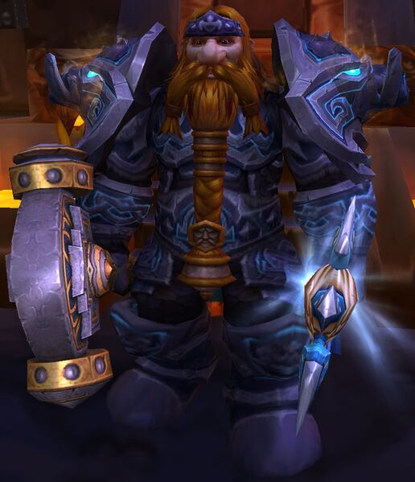
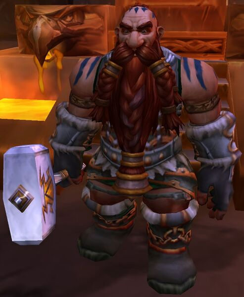
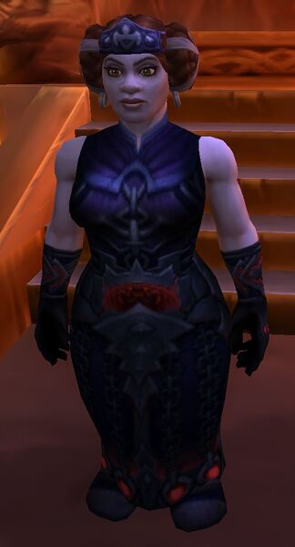
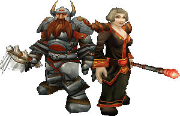
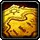
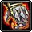
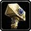
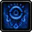

Página Principal
En esta página puedes encontrar diversa información sobre la raza de los enanos en el videojuego World Of Warcraft.
A continuación se observará una tabla con los líderes de los enanos:
| Líderes Enanos | |
|---|---|
|  |
Muradin Barbabronce: Líder del clan Barbabronce, hermano del antiguo rey y actual "mensajero de la tierra" Magni Barbabronce. |
|  |
Falsad Martillosalvaje: Líder del clan Martillo salvaje: los enanos del norte, después de ser desterrados de su antigua capital "Grim Batol" |
|  |
Moira Thaurissan: Líder del clan Hierro negro, hija del antiguo rey Magni, esposa del antiguo líder del clan Hierro negro Dagran Thaurissan. |
¿Sabías qué...
Los enanos son la raza con más clases jugables en la alizanza?
Habilidades Raciales en Wow
-  Expedicionario
-  Forma de piedra
-  Poderio de la montaña
-  Resistencia a la escarcha